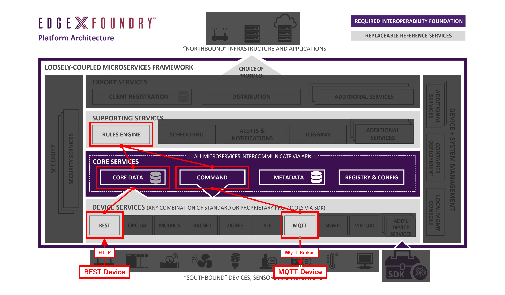

Lab 5 - ルールエンジンの利用¶
これまでのエントリでは、仮想デバイスや MQTT デバイスを用いて、デバイスからの情報の収集やデバイスへのコマンドの実行を試してきました。
今回は、ルールエンジンの動作、つまり、
- 何らかのデバイスのリソースの値が
- 何らかの条件を満たしたら
- 別のデバイスでコマンドを実行する
ような自動制御を実際に試します。
前回のエントリ で構成した MQTT デバイスだけを利用してもすぐできるのですが、それだけだとおもしろくないので、新しいデバイスサービスをひとつ追加して、それを組み込みます。具体的には、
- ルール (1)
- REST デバイスから送られる値が
- 80 を越えたら
- MQTT デバイスにメッセージ HIGH を送信する
- ルール (2)
- REST デバイスから送られる値が
- 20 を下回ったら
- MQTT デバイスにメッセージ LOW を送信する
ような状態を目指します。図示すると以下のような状態です。

必要なファイルの用意¶
前のラボでリポジトリをクローンしていない場合はクローンします。
$ git clone https://github.com/kurokobo/edgex-lab-handson.git
今回は lab05 ディレクトリです。
$ cd lab05
REST デバイスの追加¶
まだ開発途中で正式リリースには至っていないようですが、device-rest-go と名付けられたデバイスサービスがあります。
REST デバイスサービスの概要¶
これは、以下のようなデバイスサービスです。
- REST で POST してくるデバイスに利用する
- POST されたリクエストボディの中身を値として EdgeX Foundry に取り込む
このデバイスサービスを構成すると、エンドポイントとして
- /api/v1/resource/<デバイス名>/<リソース名>
が作成され、これに対して POST することで値を取り込んでくれるようになります。デバイス名やリソース名は、前回取り扱った MQTT デバイスと同様、デバイスプロファイルなどの設定ファイルで定義できます。
なお、現時点では情報のやりとりは一方向であり、つまり、デバイス側から POST された値を取り込むのみで、逆にデバイス側へのリクエストの発行はできないようです。 また、JSON を投げても、現時点の実装ではパースはしてくれず単なる文字列として扱われるようです。
今回試す設計¶
今回は、 device-rest-go の README.md を参考に、以下のデバイスサービスとデバイスを定義しています。
- デバイスプロファイル
- rest/rest.test.device.profile.yml ファイル
- リソース int と float を定義
- デバイスサービス設定
- rest/configuration.toml ファイル
- 上記のデバイスプロファイルに紐づけた REST_DEVICE を定義
これにより、
- /api/v1/resource/REST_DEVICE/int
- /api/v1/resource/REST_DEVICE/float
に値を POST すれば取り込んでもらえるようになるはずです。
この REST デバイスサービスを含め、今回分の環境は、Docker Compose ファイルに反映済みです
起動¶
では、今回分の環境をまとめて起動させます。
MQTT デバイスは今回も使うので、 環境に合わせて mqtt/configuration.toml は修正してください。
MQTT ブローカ、MQTT デバイス、EdgeX Foundry の順に起動します。
$ docker run -d --rm --name broker -p 1883:1883 eclipse-mosquitto
$ docker run -d --restart=always --name=mqtt-scripts -v "$(pwd)/mqtt-scripts:/scripts" dersimn/mqtt-scripts --url mqtt://192.168.0.100 --dir /scripts
$ docker-compose up -d
REST デバイスサービスの動作確認¶
起動が確認できたら、実際にエンドポイントに POST して、データの取り込みを確認します。待ち受けポートは 49986 です。Content-Type は text/plain である必要があります。
$ curl -X POST -H "Content-Type: text/plain" -d 12345 http://localhost:49986/api/v1/resource/REST_DEVICE/int
edgex-device-rest コンテナのログで Pushed event to core data が記録されていれば、値は正常に受け付けられています。
$ docker logs --tail 5 edgex-device-rest
level=DEBUG ts=2020-01-25T07:49:17.0621062Z app=edgex-device-rest source=resthandler.go:82 msg="Received POST for Device=REST_DEVICE Resource=int"
level=DEBUG ts=2020-01-25T07:49:17.0673842Z app=edgex-device-rest source=resthandler.go:101 msg="Content Type is 'text/plain' & Media Type is 'text/plain' and Type is 'Int64'"
level=DEBUG ts=2020-01-25T07:49:17.0726606Z app=edgex-device-rest source=resthandler.go:142 msg="Incoming reading received: Device=REST_DEVICE Resource=int"
level=DEBUG ts=2020-01-25T07:49:17.0766349Z app=edgex-device-rest source=utils.go:75 correlation-id=946f482c-db1f-44b5-8a76-437c4ca3d3e9 msg="SendEvent: EventClient.MarshalEvent encoded event"
level=INFO ts=2020-01-25T07:49:17.0899243Z app=edgex-device-rest source=utils.go:93 Content-Type=application/json correlation-id=946f482c-db1f-44b5-8a76-437c4ca3d3e9 msg="SendEvent: Pushed event to core data"
実際に取り込まれているようです。
$ edgex-cli reading list REST_DEVICE -l 10
Reading ID Name Device Origin Value Created Modified Pushed
b43f7300-1377-4fdb-a82f-44eb497d9568 int REST_DEVICE 1579938557072646900 12345 3 minutes 3 minutes 50 years
ルールエンジンの利用¶
お膳立てができたので、本題のルールエンジンを構成していきます。
ルールエンジンの概要¶
詳細は 公式のドキュメント がわかりやすいですが、端的に言えば、
- コアサービスまたはエクスポートサービスからデータを受け取る
- 事前に定義されたルールの条件との合致を確認する
- 合致していた場合は、そのルールで定義されたアクションを実行する
ような処理をしてくれるサービスです。
実装は現段階では BRMS の Drools ベースとのことなので、Java 製ですね。
ルールエンジンへデータを配信する構成パタンは、ドキュメントでは以下の二つが説明されています。
- エクスポートサービスのクライアントとして動作させるパタン
- データは Export Distribution（edgex-export-distro コンテナ）から配信される
- データの流れが全体で統一されてシンプルに
- レイテンシやエクスポートサービスのキャパシティなどの面にデメリット
- コアサービスに直結させるパタン
- データは Core Data（edgex-core-data コンテナ）から配信される
- エクスポートサービスをバイパスすることで、レイテンシやパフォーマンス面ではメリットがある
- データの流れはやや複雑に
この構成パタンの選択や、具体的な接続先の情報は、次で紹介する設定ファイルで指定できます。
ルールエンジンの設定¶
設定がデフォルトのままでよければ、コンテナイメージの中にすべて含まれているので、敢えて手で投入する必要はありませんが、今回はせっかくなので触れるようにしています。rulesengine フォルダの中のファイル群がそれです。
公式のドキュメント で触れられている設定が含まれるファイルが、rulesengine/application.properties です。
$ cat rulesengine/application.properties
...
export.client=false
...
export.client.registration.url=http://edgex-export-client:48071/api/v1
export.client.registration.name=EdgeXRulesEngine
...
export.zeromq.port=5563
export.zeromq.host=tcp://edgex-core-data
...
export.client が false なので、今回はコアサービスから直接データを受け取ります。export.zeromq.host は現時点のデフォルトでは tcp://edgex-app-service-configurable-rules になっており、アプリケーションサービス からデータを受け取る形になっていますが、今回はシンプルにドキュメントに従って tcp://edgex-core-data にしています。
もう一つのファイルが、rulesengine/rule-template.drl です。これはルールそのもののテンプレートとして利用されます。これについては後述します。
ルールの設定¶
では、実際にルールを設定していきます。現状、GUI でも CLI でもできないので、API を叩きます。標準 GUI には設定画面はあるものの、プルダウンに項目が出てこなくて設定できずでした。
ルールの検討¶
ルールは以下ような JSON で投入します。
{
"name": "<ルール名>",
"condition": {
"device": "<トリガ条件にするデバイス名>",
"checks": [
{
"parameter": "<トリガ条件にするリソース名>",
"operand1": "<トリガ条件にする値>",
"operation": "<比較演算子>",
"operand2": "<トリガする閾値>"
}
]
},
"action": {
"device": "<操作対象のデバイス ID>",
"command": "<操作対象のコマンド ID>",
"body": "<操作対象のコマンドに PUT される内容>"
},
"log": "<トリガされたときのログ出力文字列>"
}
全体の構造は、condition で指定した条件を満たしたら action で指定したコマンドがトリガされる、と思えばよいでしょう。
condition での指定値は以下のように組んでいきます。
- device
- トリガ条件にするデバイスの名称を指定します。ID では動かないので注意です
- 今回だと、REST デバイスの値を元にコマンドを実行したいので、REST_DEVICE を指定します
- parameter
- トリガ条件にするデバイスのリソース名を指定します。リソース名なので、デバイスプロファイルで指定した名称であり、すなわち Reading の名前でもあります
- 今回の REST_DEVICE はリソース int と float を持ちますが、今回は int を指定します
- operand1
- 比較元になる値を作ります。デバイスの値は内部では文字列値として扱われているため、数値であれば適切な型にキャストする必要があります
- Drools が Java ベースのため、ここでは Java の文法で書きます。値に応じて、例えば以下などが使い分けられるでしょう
- Integer.parseInt(value)
- Float.parseFloat(value)
- operation
- 比較演算子です。<、=、> などが考えられます
- operand2
- 閾値です
action での指定値は、以下のように組みます。
- device
- 先ほどと異なり、ここでは ID で指定します
- 今回は MQ_DEVICE の ID です
- デバイスの ID は API で確認できます（方法は 過去のエントリ で）
- command
- コマンドも ID で指定します
- 今回は testmessage の ID です
- コマンドの ID も API で確認できます（方法は 過去のエントリ で）
- body
- コマンドの PUT 命令のボディを JSON 形式で指定します
- めっちゃエスケープが必要です
- 例えば今回だと、{\\"message\\":\\"HIGH\\"} や {\\"message\\":\\"LOW\\"} です
最終的に、今回作りたい以下のルール群は、
- ルール (1)
- REST デバイスから送られる値が
- 80 を越えたら
- MQTT デバイスにメッセージ HIGH を送信する
- ルール (2)
- REST デバイスから送られる値が
- 20 を下回ったら
- MQTT デバイスにメッセージ LOW を送信する
ひとつめは以下の JSON で、
{
"name": "rule_int_high",
"condition": {
"device": "REST_DEVICE",
"checks": [
{
"parameter": "int",
"operand1": "Integer.parseInt(value)",
"operation": ">",
"operand2": "80"
}
]
},
"action": {
"device": "09dae1fc-e2be-4388-9677-639d2f24c58b",
"command": "1c7a50e7-5424-4bce-9b9a-29849510580e",
"body": "{\\\"message\\\":\\\"HIGH\\\"}"
},
"log": "Action triggered: The value is too high."
}
ふたつめは以下の JSON であらわされます。
{
"name": "rule_int_low",
"condition": {
"device": "REST_DEVICE",
"checks": [
{
"parameter": "int",
"operand1": "Integer.parseInt(value)",
"operation": "<",
"operand2": "20"
}
]
},
"action": {
"device": "09dae1fc-e2be-4388-9677-639d2f24c58b",
"command": "1c7a50e7-5424-4bce-9b9a-29849510580e",
"body": "{\\\"message\\\":\\\"LOW\\\"}"
},
"log": "Action triggered: The value is too low."
}
ルールの投入¶
では、ルールを投入します。エンドポイントは以下です。
- http://localhost:48075/api/v1/rule
ここに、先の JSON を POST します。


ルールの確認¶
ルールが投入されると、rule-template.drl を元に新しい <ルール名>.drl ファイルが生成されて利用されます。edgex-support-rulesengine 内に配置されるので、ここではコンテナ内のファイルを cat して覗きます。
$ docker exec edgex-support-rulesengine cat /edgex/edgex-support-rulesengine/rules/rule_int_high.drl
package org.edgexfoundry.rules;
global org.edgexfoundry.engine.CommandExecutor executor;
global org.edgexfoundry.support.logging.client.EdgeXLogger logger;
import org.edgexfoundry.domain.core.Event;
import org.edgexfoundry.domain.core.Reading;
import java.util.Map;
rule "rule_int_high"
when
$e:Event($rlist: readings && device=="REST_DEVICE")
$r0:Reading(name=="int" && Integer.parseInt(value) > 80) from $rlist
then
executor.fireCommand("09dae1fc-e2be-4388-9677-639d2f24c58b", "1c7a50e7-5424-4bce-9b9a-29849510580e", "{\"message\":\"HIGH\"}");
logger.info("Action triggered: The value is too high.");
end
$ docker exec edgex-support-rulesengine cat /edgex/edgex-support-rulesengine/rules/rule_int_low.drl
package org.edgexfoundry.rules;
global org.edgexfoundry.engine.CommandExecutor executor;
global org.edgexfoundry.support.logging.client.EdgeXLogger logger;
import org.edgexfoundry.domain.core.Event;
import org.edgexfoundry.domain.core.Reading;
import java.util.Map;
rule "rule_int_low"
when
$e:Event($rlist: readings && device=="REST_DEVICE")
$r0:Reading(name=="int" && Integer.parseInt(value) < 20) from $rlist
then
executor.fireCommand("09dae1fc-e2be-4388-9677-639d2f24c58b", "1c7a50e7-5424-4bce-9b9a-29849510580e", "{\"message\":\"LOW\"}");
logger.info("Action triggered: The value is too low.");
end
手元の rule-template.drl と見比べると、テンプレートを元に展開されているっぽさがわかりますね。Drools の drl ファイルの文法にあまり詳しくないですが、行われているのが単純な文字列連結なのであれば、operand に指定する値あたりは工夫すると、もうちょっと複雑な計算もできるのかもしれません。試していませんし、インジェクション攻撃っぽいですけど。
なお、現在の API ではルールの中身までは確認できず、ルール名の一覧が取得できるのみのようです。悲しい。
$ curl -s http://localhost:48075/api/v1/rule | jq
[
"rule_int_high",
"rule_int_low"
]
ルールエンジンの動作確認¶
動作を確認していきます。
動きを追いやすくするため、下準備として edgex-support-rulesengine のログを常時表示させて、さらに別のターミナルで MQTT ブローカの全トピックを購読しておくとわかりやすいです。
$ docker logs -f --tail=10 edgex-support-rulesengine
[2020-01-25 13:44:15.023] boot - 6 INFO [main] --- ZeroMQEventSubscriber: JSON event received
[2020-01-25 13:44:15.024] boot - 6 INFO [main] --- ZeroMQEventSubscriber: Event sent to rules engine for device id: MQ_DEVICE
[2020-01-25 13:44:17.214] boot - 6 INFO [main] --- ZeroMQEventSubscriber: JSON event received
[2020-01-25 13:44:17.216] boot - 6 INFO [main] --- ZeroMQEventSubscriber: Event sent to rules engine for device id: MQ_DEVICE
...
$ docker run --init --rm -it efrecon/mqtt-client sub -h 192.168.0.100 -t "#" -v
logic/connected 2
DataTopic {"name":"MQ_DEVICE","cmd":"randfloat32","randfloat32":"27.0"}
...
では、REST デバイスの気持ちになって、まずはルールに合致しないデータを REST デバイスサービスに POST します。
$ curl -X POST -H "Content-Type: text/plain" -d 50 http://localhost:49986/api/v1/resource/REST_DEVICE/int
値は取り込まれていますし、
$ edgex-cli reading list REST_DEVICE -l 10
Reading ID Name Device Origin Value Created Modified Pushed
66461804-a894-470f-a099-631ffd4c32cb int REST_DEVICE 1579960045357298000 50 About a minute About a minute 50 years
ルールエンジンにも REST_DEVICE からの値は届いているようなログが出ますが、実際には何もトリガされません。正常です。
$ docker logs -f --tail=10 edgex-support-rulesengine
...
[2020-01-25 13:47:25.370] boot - 6 INFO [main] --- ZeroMQEventSubscriber: JSON event received
[2020-01-25 13:47:25.466] boot - 6 INFO [main] --- ZeroMQEventSubscriber: Event sent to rules engine for device id: REST_DEVICE
...
つづいて、ルールに合致する値を投げます。
$ curl -X POST -H "Content-Type: text/plain" -d 90 http://192.168.0.100:49986/api/v1/resource/REST_DEVICE/int
ルールエンジンのログでは、指定したログメッセージが記録され、 {"message":"HIGH"} が指定したコマンドにリクエストされたことがわかります。
$ docker logs -f --tail=10 edgex-support-rulesengine
...
[2020-01-25 13:57:26.805] boot - 6 INFO [main] --- ZeroMQEventSubscriber: JSON event received
[2020-01-25 13:57:26.853] boot - 6 INFO [main] --- RuleEngine: Action triggered: The value is too high.
[2020-01-25 13:57:26.853] boot - 6 INFO [SimpleAsyncTaskExecutor-2] --- CommandExecutor: Sending request to: 09dae1fc-e2be-4388-9677-639d2f24c58bfor command: 1c7a50e7-5424-4bce-9b9a-29849510580e with body: {"message":"HIGH"}
[2020-01-25 13:57:26.866] boot - 6 INFO [main] --- RuleEngine: Event triggered 1rules: Event [pushed=0, device=REST_DEVICE, readings=[Reading [pushed=0, name=int, value=90, device=REST_DEVICE]], toString()=BaseObject [id=538aea34-b4ce-4342-88a9-6c08cdac080e, created=0, modified=0, origin=1579960646793054700]]
...
MQTT ブローカ上では、MQTT デバイスに対するコマンド実行が行われた様子がわかります。
$ docker run --init --rm -it efrecon/mqtt-client sub -h 192.168.0.100 -t "#" -v
CommandTopic {"cmd":"message","message":"HIGH","method":"set","uuid":"5e2c4946b8dd790001754b8b"}
ResponseTopic {"cmd":"message","message":"HIGH","method":"set","uuid":"5e2c4946b8dd790001754b8b"}
...
MQTT デバイスの testmessage コマンドに GET すると、値が狙い通りに変更されていることがわかります。
$ curl -s http://localhost:48082/api/v1/device/name/MQ_DEVICE/command/testmessage | jq
{
"device": "MQ_DEVICE",
"origin": 1579960983817888000,
"readings": [
{
"origin": 1579960983809258000,
"device": "MQ_DEVICE",
"name": "message",
"value": "HIGH"
}
],
"EncodedEvent": null
}
同様に、REST デバイスの気持ちになってふたつめのルールに合致する値を投げます。
$ curl -X POST -H "Content-Type: text/plain" -d 10 http://192.168.0.100:49986/api/v1/resource/REST_DEVICE/int
もろもろの処理が動き、MQTT デバイス側の値が変わったことが確認できます。
$ curl -s http://localhost:48082/api/v1/device/name/MQ_DEVICE/command/testmessage | jq
{
"device": "MQ_DEVICE",
"origin": 1579961107845061000,
"readings": [
{
"origin": 1579961107837083000,
"device": "MQ_DEVICE",
"name": "message",
"value": "LOW"
}
],
"EncodedEvent": null
}
まとめ¶
あるデバイスの値の変化をトリガにして、別のデバイスを制御できることが確認できました。
今回は、REST デバイスを使った関係で、実質手動でトリガさせたに等しい状況でしたが、本来はセンサの値をトリガにアクチュエータを動かすような使い方になるでしょう。REST デバイスの代わりに MQTT デバイスや仮想デバイスのランダム値を condition に指定すれば、似たような状況のテストが可能です。
現段階ではシンプルなルールエンジンしか積まれていませんが、今後エコシステムが成熟してアプリケーションサービスなどが充実してくれば、より複雑な処理も可能になることが期待できます。